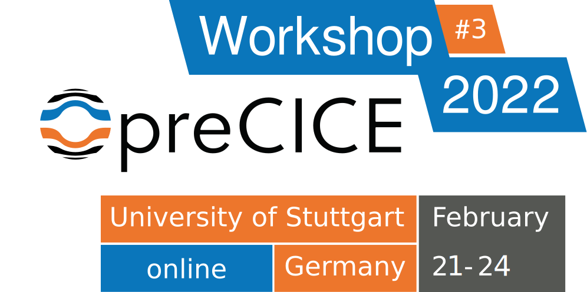
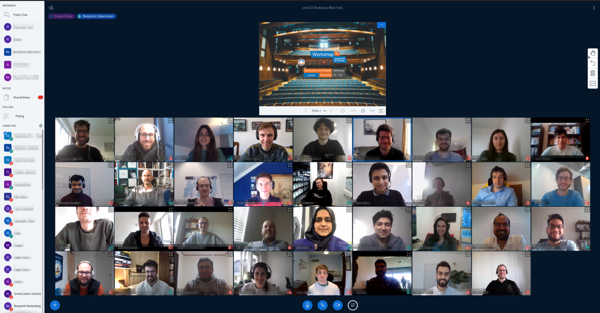

The 3rd preCICE Workshop was held virtually through SimTech and the University of Stuttgart, on February 21-24, 2022. The workshop is a coming together of the preCICE community to share ideas, experiences and knowledge about using preCICE, and to learn from others in the process.
Registration is closed.
If you have any questions regarding the workshop, please contact us at precice2022@ipvs.uni-stuttgart.de.
Program
The workshop stretches from Monday noon CET to Thursday evening CET.
Monday, February 21
- 12:30 - 13:00 CET Welcoming (Main Hall)
-
13:00 - 14:30 CET Developer talks
Gerasimos Chourdakis and Frédéric Simonis: What's new in preCICE?
Authors: Gerasimos Chourdakis, Frédéric Simonis
Affiliation: Technical University of Munich, GermanyThe core library became more robust, user-, and resource-friendly, while we restructured the tutorials and polished both bindings and adapters. In this talk, we will explore released as well as upcoming changes to both the library and the ecosystem as a whole.
Benjamin Uekermann: You support preCICE – preCICE supports you
Authors: Benjamin Uekermann
Affiliation: University of Stuttgart, GermanyFunding open-source research software such as preCICE in a sustainable manner is a challenge. Moreover, during the past year, the amount of support requests and collaborations has reached the manageable limit of the preCICE core team. We are introducing a preCICE support program to solve both issues – such that you can support preCICE and, thus, we can support you in a better and more reliable way. In this talk, we step you through our thought process that led to the program and discuss its funding and support options.
- 14:30 - 15:00 CET Speakers in separate rooms for Q&A
- 15:00 - 15:30 CET Break (Offline)
-
15:30 - 17:00 CET preCICE Course I (Main Hall)
preCICE Course I: Basics
Instructors: Gerasimos Chourdakis, Benjamin Uekermann
Affiliation: Technical University of Munich, University of Stuttgart, preCICE developers.A hands-on introduction to preCICE, recommended for new users that want to learn how to couple their own codes.
In this first part, we couple two simple Python codes, discussing the basic methods of the preCICE API.
We recommend to use the preCICE Demo Virtual Machine for the course. If you, however, prefer installing things on your system, you require preCICE v2.3, Python 3.6 or newer, and the Python bindings of preCICE. Optionally, please also install ParaView and gnuplot, or similar software to visualize VTK point data and CSV files.
Tuesday, February 22
- 09:45 - 10:00 CET Morning synchronization (Main Hall)
-
10:00 - 12:00 CET User presentations (Main Hall)
See preCICE in action, in a variety of applications. Each talk is an approx. 20min video premiere, followed by a live Q&A session. Click on each box for more details.Sanjoy Kumar Saha: Aero‐Structural Analysis of Flexible Structure Membrane Aeroshell
Authors: Sanjoy Kumar Saha
Affiliation: Hokkaido University, JapanAtmospheric entry is one of the most critical phases in planetary exploration missions due to the strong heating, communication blackout and aerodynamic loads caused by the high velocity of the capsule. The use of a deployable aerodynamic decelerator with flexible membrane as an entry vehicle is a convenient concept that has drawn significant research attention because it provides reduced aerodynamic heating with low ballistic coefficient.
In this study, the membrane aeroshell was investigated by a fluid‐structure interaction (FSI) model based on open‐source fluid solver SU2, computational structural solver CalculiX and coupling library preCICE. The present analysis model accurately recreated fundamental flow features such as swing motion, shock waves, and the expansion area in the flow field simulation. The aeroshell was elastically deformed by aerodynamic force caused by the large pressure difference between the front and rear side of the vehicle.
Nicolas Delaissé: Complementing black‐box acceleration with surrogate information
Authors: Nicolas Delaissé
Affiliation: Ghent University, BelgiumFor partitioned simulation of strongly coupled fluid‐structure interaction problems, an implicit coupling scheme with a quasi‐Newton acceleration is often used. All quasi‐Newton acceleration methods now implemented in preCICE use the solvers as black‐boxes. However, by solving a simplified version of the problem at the start of each time step, both an initial Jacobian and solution are obtained, which can subsequently be used as starting point of the actual simulation. This method is called IQN‐ILSM. The simplified version of the problem – termed surrogate model – can have a coarser mesh or just simplified physics. A prerequisite is that the calculation time is significantly less than the actual problem. Finally, also the Jacobian and solution from the previous time step can be regarded as surrogate model, resulting in a reuse method without large square matrices.
Alexander Jaust: Simulation of flow in deformable fractures
Authors: Alexander Jaust, Miriam Schulte
Affiliation: University of Stuttgart, GermanyAs part of the SFB1313 we work on coupled porous-media applications. This includes the prediction of fluid flow in and deformation of fractures in a porous medium. These predictions are important for hydraulic applications and hydro-fracking. We present an approach to simulate such applications based on a mixed-dimensional model using FEniCS and preCICE. This approach avoids the ill-conditioned monolithic problem and is suitable for, both, single fractures and fracture networks
- 12:00 - 13:00 CET Break (Offline)
-
13:00 - 15:00 CET User presentations (Main Hall)
Fabian Böttcher: Optimising the thermal use of groundwater for a decentralized heating and cooling supply in the city of Munich, Germany
Authors: Fabian Böttcher
Affiliation: Technical University of Munich, GermanyShallow geothermal energy can contribute to a regenerative supply of urban heating and cooling and hence, reduce primary energy consumption and greenhouse gas emissions. In Munich, which hosts a productive aquifer, conditions are favourable for thermal use. Thus, the future development of this already intensely used urban aquifer holds challenges to avoid conflicting uses, but also opportunities to build synergies and balance the energy budget. The project GEO.KW took up this challenge and developed an optimisation tool for the thermal use of groundwater. The core element is the coupling between a thermal‐hydraulic groundwater model (PFLOTRAN) and a linear optimisation model for distributed energy systems (urbs) using preCICE. The optimisation integrates restrictions from water protection, like temperature or extraction limits, and analyses conventional systems alongside with thermal use. As cost factor in the optimisation, greenhouse gas emissions and economic cost is evaluated.
Muhammad Hassani: An interface to preCICE in pyiron workflows
Authors: Muhammad Hassani
Affiliation: Max Planck Institute for iron research, GermanyPyiron is an IDE for materials science, in which all steps to develop and run complex simulation workflows can be performed. This includes the initial setup, the remote/interactive submission on HPC clusters, the post‐processing, as well as the management, mining, and visualization of the data. Additionally, pyiron provides a high‐level unified language for multiple simulation tools. Examples are molecular dynamics simulations with LAMMPS or simulations of the elastoplastic response of materials with DAMASK.
Using a [Jupyter environment](https://github.com/max-hassani/precice_workshop), pyiron worklows are easily accessible, can be shared alongside their publications, are reproducible and reusable, with interoperability between various simulation tools.
Here, we present our recently developed pyiron job class to couple continuum scale tools using the preCICE python API. An example of two FEniCS simulations, coupled to solve heat transfer equations, is chosen as a demonstrator to highlight the ease and flexibility of using pyiron.
Arved Enders‐Seidlitz: Development of a coupled heat and gas flow model for crystal growth
Authors: Arved Enders‐Seidlitz
Affiliation: Leibniz Institute for Crystal Growth, GermanyCrystal growth simulations involve a variety of physical phenomena, e.g., heat transfer, gas and melt flows, electromagnetism and thermal stresses. The Finite element (FEM) and Finite volume methods (FVM) have been selected as the main simulation tools for a new crystal growth model. Currently, 2D axisymmetric heat transfer including radiation, phase change and inductive heating are implemented using FEM in Elmer and FEniCSx. The FVM solver OpenFOAM has been chosen for gas flow simulations. In this contribution, the coupling strategy between Elmer‐OpenFOAM / FEniCSx‐OpenFOAM using preCICE library is discussed. First test cases are evaluated for both couplings, and requirements for future development are analyzed.
Arpan Sircar: Volumetric coupling of OpenFOAM for multi‐physics simulations of fusion reactor blankets
Authors: Arpan Sircar
Affiliation: Oak Ridge National Laboratory, USApreCICE was mainly developed for surface coupling of multiple codes. In the present work, the capability of volumetric coupling using preCICE’s OpenFOAM adapter is tested. This is performed using cell‐level interpolations and operator‐splitting of OpenFOAM solvers. The sensitivity to different mapping schemes, time interpolation windows and acceleration techniques are studied. This is primarily a work in progress to ascertain whether preCICE’s capabilities can be used out of the box to perform volumetric coupling. While current tests are only limited to OpenFOAM solver, coupling with other home‐grown and commercial codes such as Diablo for structural simulations and MCNP/Shift for neutronic simulations are underway.
The broader goal of the current project is to develop an integrated simulation environment for the coupled neutronic, thermal‐hydraulic, and plasma‐physics simulation of plasma, vacuum vessel, and blanket of conceptual fusion reactors.
-
15:00 - 16:30 CET preCICE Course II (Main Hall)
preCICE Course II: Tools
Instructors: Gerasimos Chourdakis, Benjamin Uekermann
Affiliation: Technical University of Munich, University of Stuttgart, preCICE developers.A hands-on introduction to preCICE, recommended for new users that want to learn how to couple their own codes.
In this second part, we take a tour over available tools to configure, understand, and post-process preCICE simulations. More specifically, we have a look at the preCICE logger, config visualizer, mesh exports, and watchpoints of preCICE. We also discuss common tips for visualizing partitioned simulations in ParaView.
- 16:30 - 17:00 CET Break (Offline)
- 17:00 - 19:00 CET Networking/Social Event (Gather.town)
Get to know each other and discuss your work in more detail, or simply enjoy a relaxed atmosphere after the user presentation talks.
Wednesday, February 23
- 09:45 - 10:00 CET Morning synchronization (Main Hall)
-
10:00 - 12:00 CET Developer talks (Main Hall)
Learn about the latest developments or other important elements of preCICE. Similarly to the speaker presentations, the talks are pre-recorded, followed by a live Q&A session. Click on each box for more details.Ishaan Desai: Adaptive and flexible macro micro coupling software
Authors: Ishaan Desai
Affiliation: University of Stuttgart, GermanyFor many challenging applications in simulation technology, micro-scale phenomena often dominates macro-scale behavior. We present a novel software and algorithm framework called the Micro Manager to couple existing micro-scale and macro-scale simulation programs in a black-box fashion. The Micro Manager calls all micro-scale simulations as libraries and it is itself coupled to the macro-scale simulation using preCICE. Using results of parallel simulations we show that adaptive initialization of micro simulations is critical. Load balancing strategies in the context of adaptive macro-micro coupled simulations are also shown. The working of the Micro Manager is demonstrated using a two-scale porous media application. Application of the Micro Manager in two-scale simulations in the field of human body modeling are also discussed.
Gerasimos Chourdakis: Testing the multi‐component preCICE ecosystem
Authors: Gerasimos Chourdakis
Affiliation: Technical University of Munich, GermanyWith several bindings, adapters, tutorials, and more components now in its arsenal, preCICE is now much more than a coupling library: it is a rapidly growing multiphysics ecosystem. One small code contribution in any of the involved repositories can have side-effects on the building, running, and computations of any downstream component. Creating a sustainable testing framework for such a complex ecosystem is not trivial. This talk will discuss the status quo of testing complete coupled simulations for regressions, the ideal system for all the involved stakeholders, challenges specific to preCICE, and novel solutions that will lead us to the new preCICE system tests.
Benjamin Rodenberg: From low-order to high-order coupling schemes
Authors: Benjamin Rodenberg
Affiliation: Technical University of Munich, GermanypreCICE offers explicit and implicit coupling schemes. They often can only reach first-order accuracy in time. We currently develop an extended coupling scheme that allows time interpolation of coupling data. With this coupling scheme one can generally reach higher order. In this talk I give a practical introduction for low-order and high-order coupling schemes in preCICE.
David Schneider: Data Mapping in preCICE: Summary & Outlook
Authors: David Schneider
Affiliation: University of Stuttgart, GermanyThis talk starts with an overview of the mapping methods as recently published in our new reference paper . The published results highlight important properties of the individual methods currently available in preCICE in terms of accuracy, performance as well as stability. In order to improve on these results and extend the flexibility of preCICE in the future, new mapping methods are currently under development. In particular, gradient-based mappings as well as partition of unity approaches are introduced and discussed.
- 12:00 - 12:30 CET Speakers in separate rooms for Q&A
- 12:30 - 13:30 CET Break (Offline)
-
13:30 - 15:00 CET preCICE Course III (Main Hall)
preCICE Course III: Implicit Coupling
Instructors: Gerasimos Chourdakis, Benjamin Uekermann
Affiliation: Technical University of Munich, University of Stuttgart, preCICE developers.A hands-on introduction to preCICE, recommended for new users that want to learn how to couple their own codes.
In this third part, we use a conjugate heat conduction scenario coupling OpenFOAM with Nutils to study implicit coupling.
If you do not use the preCICE Demo Virtual Machine, you additionally require Nutils 6, OpenFOAM (e.g. v2112), and the latest OpenFOAM adapter for this part.
- 15:00 - 16:00 CET Break (Offline)
- 16:00 - 17:00 CET Workshop feedback (Main Hall)
- The World Café-styled feedback session provides the chance for participants to give feedback on the virtual workshop, the usability of preCICE, the support program, and the community in general. Participants are divided into breakout rooms, where a moderator presents a shared pad and motivate the discussion.
- 17:00 - 17:10 CET Closing (Main Hall)
Thursday, February 24
- The entire day is dedicated to hands-on user support. Users are able to interact with developers in various breakout rooms. The user support can vary from questions asked live, to discussing more in-depth problems on the Discourse channel. (Main Hall)
- 10:00 - 12:00 CET
- 13:00 - 15:00 CET
- 16:00 - 18:00 CET
Registration
This is an academic, non-profit conference. However, we still have to collect a small registration fee. For early registrations (until January 17), the registration fee is
- 50€ for members of universities and public research institutes and
- 150€ for all other participants.
Registration is still possible after this date, with a registration fee of
- 100€ for members of universities and public research institutes and
- 300€ for all other participants.
Registration is closed
For those who do not have funding to pay for the registration, you can write an email to us at precice2022@ipvs.uni-stuttgart.de, and we will evaluate each case individually. For selected cases we will supply a voucher to be used when registering that voids the required payment.
Call for contributions
Oh no, you just missed the call for contributions deadline!
Please note that this is not a classical scientific conference, but a user and developer meeting. Contributions are very welcome, if they fit the purpose, but not mandatory. We ask for contributions in the form of pre-recorded talks.
Possible contributions include (non-exclusively):
- New adapters for community codes
- Coupling numerics
- Comparison of different mapping, coupling, and communication methods
- Coupling boundary conditions
- Multi-scale coupling
- Building, packaging, testing, documentation and other Research Software Engineering topics
If you would like to submit a talk, please fill in the respective details during the registration process. We encourage all speakers to pre-record their talks (similar to the talks from our last workshop) and submit them a few days before the workshop starts. However, for special cases, a live presentation is still possible. If you want to give a live presentation, please write to us at precice2022@ipvs.uni-stuttgart.de so that we can work with you for the planning of your talk. Have a look at the important dates below for relevant deadlines.
Important dates
- Early bird registration until January 17, 2022, at 23:59 CET
- Late registration until February 16, 2022
- Abstract submission until January 17, 2022, at 23:59 CET
- Recorded talks to be received until February 16, 2022
- Workshop February 21-24, 2022
Supporters